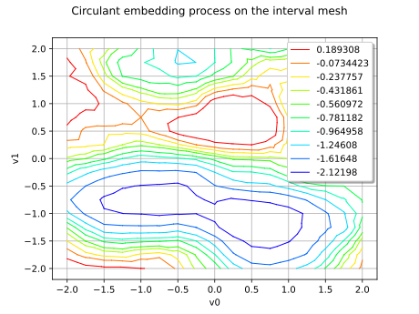
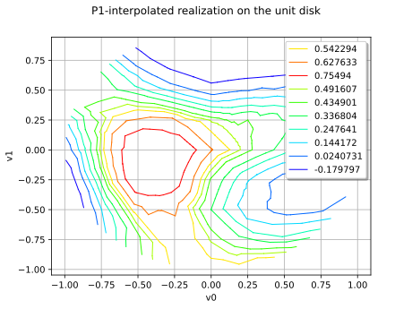

Note
Go to the end to download the full example code.
Circulant embedding Gaussian process and P1 interpolation¶
This example illustrates the use of the
CirculantEmbeddingGaussianProcess class to generate
realizations of a stationary Gaussian process defined on a regular
discretization of an interval, and the use of the
P1InterpolatedProcess class to interpolate these
realizations onto an unstructured mesh.
The circulant embedding method relies on the fast Fourier transform, so very large regular grids can be sampled in a blink: this method is fast and generates exact simulations (see the Davies-Harte algorithm [davies1987], [wood1994]). The P1 interpolation then allows one to evaluate the simulated trajectories at any location inside the simulation domain, whatever the mesh topology.
import numpy as np
import openturns as ot
import openturns.experimental as otexp
import openturns.viewer as otv
ot.Log.Show(ot.Log.NONE)
ot.RandomGenerator.SetSeed(0)
We first define the underlying covariance model: a Matérn model with
smoothness ![\nu = 5/2]() .
.
covarianceModel = ot.MaternModel([1.0, 1.0], [1.0], 2.5)
The process is defined on the interval ![[-2, 2]^2]() , meshed with an
, meshed with an
IntervalMesher: the regular grid required by the
circulant embedding method is built automatically.
interval = ot.Interval([-2.0] * 2, [2.0] * 2)
sourceMesh = ot.IntervalMesher([16, 16]).build(interval)
process = otexp.CirculantEmbeddingGaussianProcess(covarianceModel,
interval,
[16, 16])
process.setMesh(sourceMesh)
A single realization of the process is a random field over this grid. The circulant size actually used for the simulation is reported below.
field = process.getRealization()
print("circular size:", process.getCircularSize())
graph = field.drawMarginal(0)
graph.setTitle("Circulant embedding process on the interval mesh")
view = otv.View(graph)

circular size: [64,64]
We now define the target mesh: the unit disk. Since it is not regular, the circulant embedding method cannot be applied directly, but the P1 interpolation of the process can be evaluated on it.
def build_unit_disk_mesh(n_rings=8, n_theta=32):
"""Build a triangulated approximation of the unit disk."""
vertices = [[0.0, 0.0]]
for r in range(1, n_rings + 1):
radius = float(r) / n_rings
for j in range(n_theta):
theta = 2.0 * np.pi * j / n_theta
vertices.append([radius * np.cos(theta), radius * np.sin(theta)])
simplices = []
for j in range(n_theta):
j_next = (j + 1) % n_theta
simplices.append([0, 1 + j, 1 + j_next])
for r in range(2, n_rings + 1):
base_inner = 1 + (r - 2) * n_theta
base_outer = 1 + (r - 1) * n_theta
for j in range(n_theta):
j_next = (j + 1) % n_theta
a = base_inner + j
b = base_outer + j
c = base_outer + j_next
d = base_inner + j_next
simplices.append([a, b, c])
simplices.append([a, c, d])
return ot.Mesh(vertices, simplices)
diskMesh = build_unit_disk_mesh()
print("unit disk mesh: %d vertices, %d simplices" % (
diskMesh.getVerticesNumber(), diskMesh.getSimplicesNumber()))
unit disk mesh: 257 vertices, 480 simplices
The simulated process is then interpolated onto the unit disk, giving a realization whose statistical properties are preserved.
interpolatedProcess = otexp.P1InterpolatedProcess(process, diskMesh)
realization = interpolatedProcess.getRealization()
graph = realization.drawMarginal(0)
graph.setTitle("P1-interpolated realization on the unit disk")
view = otv.View(graph)

Same-trajectory comparison¶
The realization of the interpolated process is computed by P1 interpolation of the realization of the circulant embedding process. To compare the two fields on the disk, the state of the random generator has to be reset between the two calls to getRealization, so that both realizations correspond to the very same Gaussian trajectory.
The reference field on the disk is obtained by interpolating the direct realization with the same P1 interpolation as the interpolated process. Since both realizations are built from the same trajectory with the same interpolation, the two fields coincide on the disk: the max residual is equal to 0 up to floating point precision.
interpolation = ot.P1LagrangeInterpolation(process.getMesh(), diskMesh, 1)
reference = ot.Field(diskMesh, interpolation(direct.getValues()))
residual = np.abs(np.asarray(reference.getValues() - realization.getValues()))
print("max |residual| on the disk: %.3e" % residual.max())
max |residual| on the disk: 0.000e+00
The interpolated process and the direct P1 interpolation of the process realization are two consistent ways to evaluate the same Gaussian field on the disk.